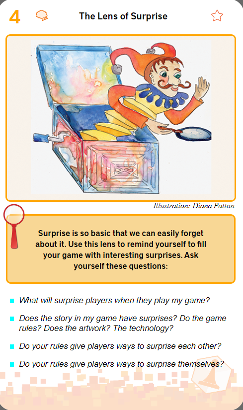
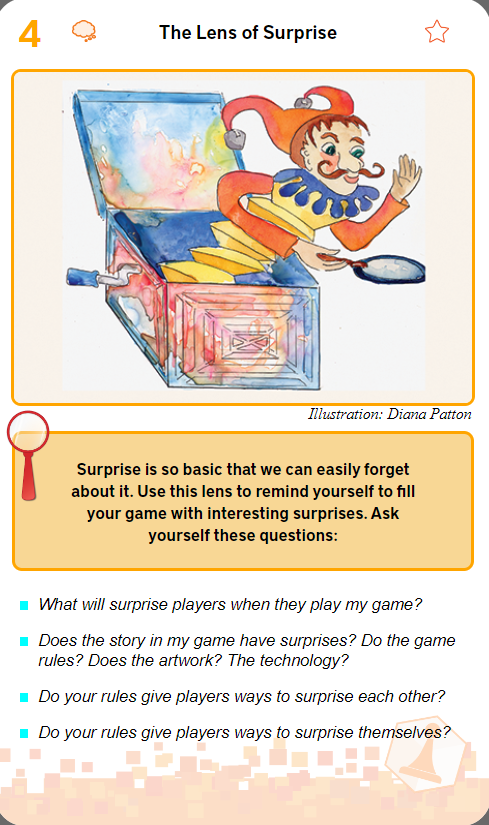

My Game Development Tips & Tricks: Lessons I've Learned Along the Way!
Welcome to my little corner of Game Dev wisdom! Over the years, I've picked up a bunch of tips, tricks, and hard-earned lessons that have helped me through the ups and downs of making games. I'm sharing some of them here in the hopes that they'll help you on your journey, too.
Story Flow
What's a story? Here's a 3 act structure one:
1- Start point
2- Breaks the order/balance
3- Player chooses to face what happened (if not there's no story)
4- Maximum dramatic interest
5- How the world/character has turned out after the solution
Unity Tips - CompareTag
Why should we use 'CompareTag' instead of '==Tag' ?
- Performance: string comparisons are slower, less internally optimized and less precise.
- Error Handling: CompareTag has a built-in check to ensure the tag exists, and if not Unity will throw an error.

The Deck of Lenses
Did you know 'The Deck of Lenses' by Jesse Schell? It's a handy tool if you're into Game Design!
It provides useful perspectives and questions that can help your game grow
You can find it here: https://deck.artofgamedesign.com
 

Audio Tools for Videogame Sound Engineers
Free sounds:
- http://freesound.org
- http://soundminer.com
Sound with Video Editor:
- Nuendo
Sound Mixer:
- Audition
Sound Design & Synthesis:
- FMOD
- Wwise
- Reaper
Game Flow
Gameflow in videogame development is crucial. It ensures a smooth and enjoyable experience, preventing frustration and boredom, which helps maintain player interest and satisfaction.
Player must feel that it's a challenge but that they can overcome it.

Data Protocols for Multiplayer
Data Protocols used in multiplayer games:
- TCP: ensures reliable transmission. Can be used for chat & lobby setups.
- UDP: is faster, ideal for real-time gameplay, handling occasional data loss for quick updates in fast-paced games.

Richard Bartle's classification of players
Richard Bartle's classification of players identifies different player motivations in online games:
- Achievers: aim for goals
- Killers: seek competition
- Socializers: enjoy interaction
- Explorers: love discovering game worlds

The 12 Principles of Animation
The 12 principles of animation bring characters to life, making movements more realistic and expressive. Master these for adding depth and dynamism to your characters and scenes!

Core Game Loop
The "action-reward-expansion" core loop in Game Design: players take actions, earn rewards, and use them to unlock new opportunities, creating an engaging cycle.
Roblox Luau Game Chat
Ever wondered how to make your Game Chat look fancier? You can use the TextChatService and add some fun colors and shapes to both the normal chat and the speech bubbles!